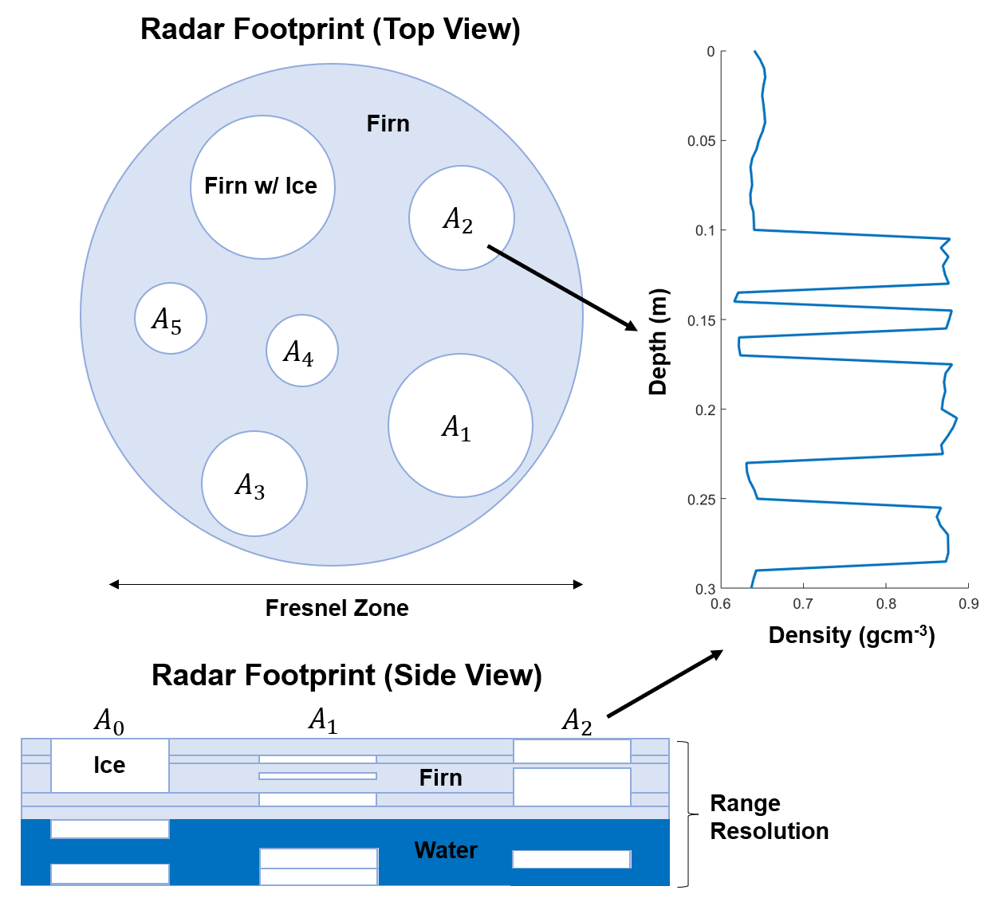
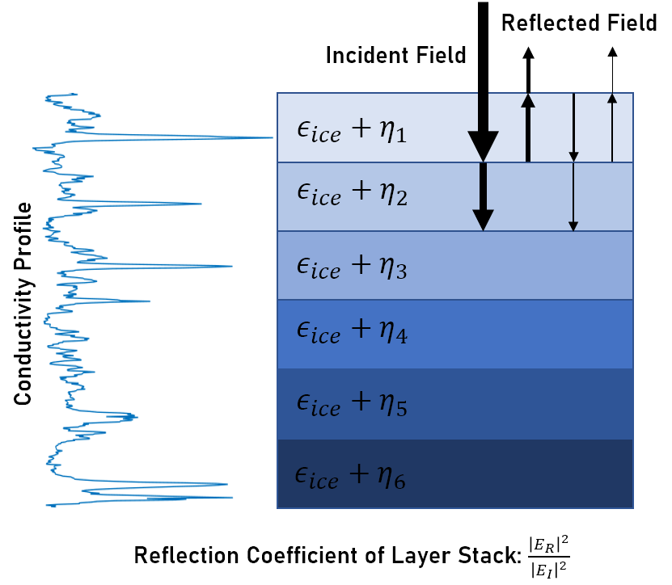
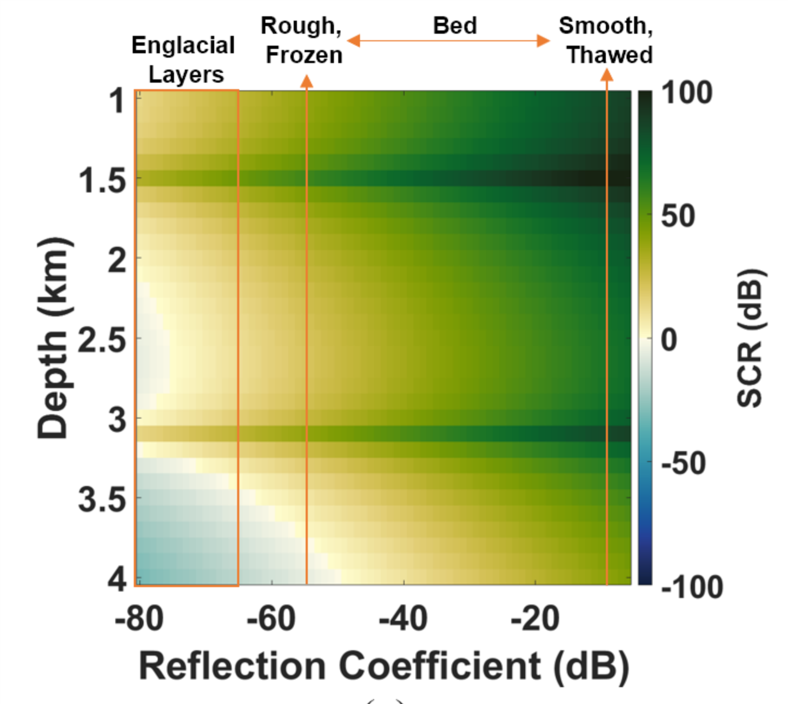
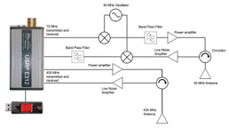

Ice Penetrating Radar Models and Inversions
Ice penetrating radar is a powerful tool for quantitative imaging of the glacial subsurface. Radar reflectivity, attenuation, and doppler frequency all contain information on the material properties and sub-resolution geometry of the ice sheet. I combine electromagnetic theory with in-situ measurements to develop radar forward models that I use to invert radar data for properties such as density, roughness, or liquid water content. I also use these models to study how the performance of different radar systems or sounding geometries are affected by englacial conditions so that we can optimize system design and post-processing methods for the glaciological targets of interest.
Recent Publications
-
 Inverting for Firn Aquifer Properties from Ice-Penetrating Radar Data (IGARSS 2022)
Perennial firn aquifers may play an important role in modulating the surface mass balance and ice dynamics of the Greenland Ice Sheet, but constraining their physical properties at large scales remains challenging. We develop a Markov Chain Monte Carlo joint inversion of radar reflectivity and attenuation to estimate firn structure and aquifer properties and use it to show taht only additional field measurement required to robustly constrain total water storage is the conductivity of the aquifer water.
-
 Simulations of Englacial Radiostratigraphy from Ice Core Measurements (IGARSS 2021)
Englacial layering in ice-penetrating radar data reflects the past atmospheric conditions and flow history of a region. As a result, both the physical cause of this layering and its geometry are of scientific interest. We develop a method for simulating englacial radiostratigraphy using measurements from deep ice cores that can be used to create synthetic radargrams for training machine learning layer tracking algorithms or test physical hypotheses for the nature of englacial radiostratigraphy.
-
 Firn Clutter Constraints on the Design and Performance of Orbital Radar Ice Sounders (TGRS, 2020)
Radar sounding from a satellite platform could vastly improve our spatial and temporal coverage of the continental ice sheets. However, tight constraints on the available frequency bands may limit the feasibility. We show that clutter from small-scale roughness in the firn layer places significant constraints on the link budget for a terrestrial orbital sounder that require either low VHF frequencies or highly directive antennas to overcome.
Mentee Projects
-
 Martin Altenburg (Stanford)
[1] Empirical Characterization of Surface Crevasse Clutter in Multi-Frequency Airborne Ice-Penetrating Radar Data (IGARSS 2022)
[2] Radar Sounding from High Altitude Balloons